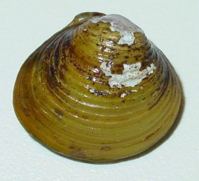

सीपीAsian Clam
Corbicula fluminea · Corbulidae · MOL-0011

- Scientific nameवैज्ञानिक नाम
- Corbicula fluminea (Müller, 1774)
- Familyकुल
- Corbulidae
- Hindiहिंदी
- सीपी
- Local namesस्थानीय नाम
- sipi, seepi, chhoti sipi, ghonghi sipi, clam
- Status hereयहाँ की स्थिति
- native
- Movementआवागमन
- Resident, here all year
- IUCNIUCN
- LC
- Reviewसमीक्षा
- audited and independently read
When to look कब देखें
Present all year.साल भर मौजूद।
Uses and possibilities उपयोग और संभावनाएँ
“Traditional medicine” means a documented traditional use, not a claim that it works. Nothing on this page is medical advice.
Drawn from the documented uses in the profile below, where each is labelled traditional, current or a research lead. All uses →
सीपी / Asian Clam
Corbicula fluminea (Müller, 1774) — Corbulidae
सीपी — गंगा के मैदान की छोटी सीपी, जो साफ़ और नरम पानी में रहती है। सफ़ेद-भूरी, दो कवचों वाली, आधा इंच लंबी। तली में दबी रहती है, पानी को छानकर पीती है और साफ़ करती है। पक्षी, गोह और ऊदबिलाव इसे खोदकर खाते हैं। इसे मछुआरे भी खोदते हैं, उबालकर खाते हैं। सूखी ज़मीन पर जलाकर चूना बनाते हैं।
Quick Identification त्वरित पहचान
| Feature | Description |
|---|---|
| Size | Shell 20–30 mm, occasionally to 40 mm |
| Shape | Triangular to oval, slightly inequivalve (one side slightly larger) |
| Colour | Whitish to yellowish-brown; sometimes purple or reddish on the umbo (hinge area) |
| Texture | Shell sculptured with concentric ribs and radial ridges, giving a checkered pattern |
| Opening | Two equal parts (valves) joined by a ligament; can close completely |
| Inside | White to cream, smooth, with muscle scars |
| Behaviour | Buried in sand and mud; siphons extend upward to draw in water |
Field tip: A small, triangular clam with a checkered shell pattern, found in the sand and mud of rivers, ponds and paddies. The two equal shells hinge together. It is much smaller than the native river mussel and often so numerous that a handful of mud yields several. The checkered pattern is distinctive.
हिंदी — कैसे पहचानें: छोटी, सफ़ेद-भूरी, जालीदार, दो कवच की। मिट्टी में दबी। हर मुट्ठी मिट्टी में कई मिल जाती हैं।
Morphology आकारिकी
Biometrics:
| Measurement | Range |
|---|---|
| Shell length | 20–30 mm |
| Shell width | 18–28 mm |
| Shell height | 15–25 mm |
| Weight | 2–5 g |
| Eggs per reproductive event | thousands |
Shell: The shell is triangular to oval, with the two valves nearly equal. The hinge is anterior and slightly offset. The exterior is sculptured with concentric ribs (growth lines) and radial ridges, creating a checkered or latticed pattern. The colour is variable: whitish, yellowish-brown, or with purple or reddish tints on the hinge area.
Anatomy: A ciliated gill for filter-feeding and respiration. Two siphons: an inhalent siphon draws in water; an exhalent siphon expels filtered water. Two adductor muscles close the valves. Hermaphroditic; releases eggs and sperm through the exhalent siphon.
Burrowing: A muscular foot extends from between the valves and digs into soft substrates, allowing the clam to bury itself.
हिंदी: खोल त्रिकोणीय, दोनों भाग बराबर। बाहर से जाली जैसा, घेरे और लकीरें। रंग सफ़ेद-भूरा, कभी बैंगनी। पैर दबता है, दो नली पानी लेती हैं।
Behaviour & Ecology व्यवहार और पारिस्थितिकता
A filter-feeder of clean water. It burrows into the sand and mud of the bottom, extending its siphons upward to draw in water. The gill filters out plankton, detritus and suspended particles, which it ingests as food. The process also cleans the water, which is why the species is an indicator of a relatively clean habitat. It is most abundant in river margins, ponds and paddies with sand or soft mud, and relatively scarce or absent from heavily silted or polluted water.
It is prey for water birds—Asian Openbill, ducks, herons—which dig it up; for Bengal Monitor and skinks; and for otters. It is also harvested by humans for food and for shell lime.
हिंदी: मिट्टी में दबकर पानी छानती है। छोटे कीड़े, गाद, पानी के कणों को खाती है। पानी को साफ़ करती है। पक्षी और गोह इसे खोदते हैं।
Life Cycle / Phenology जीवन चक्र
| Stage / season | Event |
|---|---|
| March–May | Spawning begins as water warms; releases thousands of larvae |
| May–October | Continuous reproduction in warm water; multiple broods |
| Larvae, planktonic | Free-swimming larvae in the water column for days to weeks |
| Juveniles, 1–2 months | Settlement on sand and mud; rapid growth |
| 4–6 months | Sexual maturity at 10–15 mm |
| June–September | Peak abundance of young and adults in water |
| October–February | Reduced activity in cool water; less visible but present |
| Lifespan | 2–4 years |
हिंदी: मार्च में प्रजनन शुरुआत; मई से सितंबर तक लगातार; लार्वे पानी में; एक-दो महीने में तली में; चार-छह महीने में बालिग़; दो-चार साल की उम्र।
Host Plants or Prey आहार
- Plankton: diatoms and other algae.
- Detritus: suspended organic particles.
- Bacterial film: microorganisms on water.
- Small suspended particles from the water column.
Predators / Natural Enemies शत्रु
- Birds: Asian Openbill, Lesser Whistling Duck, Indian Pond Heron, other dabbling ducks and waders.
- Reptiles: Bengal Monitor, skinks, and water snakes.
- Mammals: Otters, shrews, and other small carnivores.
- Fish: Stinging Catfish, large catfish that crush the shells.
- People: Harvested for food and shell.
Agricultural / Human Relevance कृषि प्रासंगिकता
Food. Harvested from rivers, ponds and paddies by hand or with simple tools, especially in cool season when water levels are lower and the clams more accessible. The meat is boiled or cooked in curries. A protein of fishing communities and some rural populations.
Shell lime. The shells are burned in kilns to produce lime for paan, whitewash and other uses. The trade is small but long-standing.
Water indicator. The presence and abundance of healthy clams is an indicator of reasonably clean water. Their absence from a body of water that historically held them suggests pollution.
Aquaculture. Not farmed in India; wild harvesting only.
Traditional and Ethnobotanical Use. Clam meat is recorded in some folk medicines as a food for the weak.
Today. Locally common in suitable habitats; harvested opportunistically.
Research direction (a lead, not a result). The use of Asian clams as bioindicators of water quality in village ponds is proposed but not systematically studied in the region. A survey of clam presence, absence and abundance relative to water chemistry and sediment type would establish their value as an indicator.
हिंदी: मछुआरों द्वारा खोदी जाती है, उबालकर खाई जाती है। सस्ती प्रोटीन। खोल जला कर चूना बनता है। पानी की सफ़ाई का सूचक।
Expected Locally स्थानीय रूप से अपेक्षित
Not a field record. Written from published accounts for eastern Uttar Pradesh. No confirmed local sighting yet — if you have seen it, that is what the atlas needs.
अभी तक स्थानीय पुष्टि नहीं। यह विवरण प्रकाशित स्रोतों से है, किसी अवलोकन से नहीं।
To be expected in sandy and muddy ponds, lake margins and river margins throughout the district. Most visible during monsoon when water levels rise. A photograph or a caught specimen is a confirmed record.
Distribution वितरण
Global range: Native to East and Southeast Asia; introduced to North America and Europe; now widespread in Asian freshwater systems.
In India: Throughout the Ganga system and associated wetlands; widespread in eastern India and the peninsula.
In Uttar Pradesh: Throughout; abundant in many ponds and rivers.
In Basti district / eastern UP: Expected in all soft-bottomed waters; likely abundant.
Research Questions शोध प्रश्न
Anyone can investigate these | कोई भी इन प्रश्नों की जाँच कर सकता है
- How many Asian clams can be collected from one square metre of pond mud? — Dig carefully and count.
- In which habitats are they most abundant: sandy bottoms, muddy bottoms, or paddy fields? — Compare three habitat types.
- Are they more abundant in polluted ponds or in clean water ponds? — Compare water chemistry with clam abundance.
- What water quality changes occur in a pond after one month of filtering by a large clam population? — Measure chlorophyll and suspended particles before and after.
- How much shell lime can be produced from one kilogram of clam shells? — Burn and weigh.
Similar Species मिलती-जुलती प्रजातियाँ
| Species | How to tell apart | हिंदी |
|---|---|---|
| Asian Openbill-eaten shell | Shell fragments, often larger | टुकड़े |
| River mussel (Lamellidens, Parreysia) | Much larger (50–150 mm); different shell shape; fresh-water only | बहुत बड़ी, अलग आकार |
| Fingernail clams (Sphaeriidae) | Much smaller (5–10 mm); smoother shells; different shape | बहुत छोटी, चिकनी |
Field rule: A small, triangular, checkered-pattern clam with two nearly equal valves, found buried in mud, is the Asian clam; no other small clam has the distinctive checkered sculpture.
Taxonomy & Classification वर्गीकरण
Original description. Described by Müller in 1774 as Tellina fluminea. Placed in Corbicula (a genus of Asian freshwater clams) by Römer in 1857.
Subspecies. The species varies geographically; the Indian population is the typical form.
Family and order placement. Corbulidae, the basket clams; order Venerida. The genus Corbicula contains several Asian freshwater clam species.
Phylogenetic notes. Corbicula is a clade of filter-feeding Asian clams; the family Corbulidae is basal among bivalves.
IUCN status rationale. Least Concern. Widespread and abundant in suitable habitats; no range contraction documented.
Photo Gallery फोटो गैलरी
Photos needed आवश्यक फोटो
- [ ] Single shell showing checkered pattern (जालीदार खोल)
- [ ] Pair of shells with siphons extended (दोनों कवच, नलियाँ)
- [ ] Harvested specimen (काटी हुई सीपी)
References संदर्भ
- Müller, O.F. (1774). Vermivm terrestrium et fluviatilium, vol. 2. Hafniae et Lipsiae. [original description, as Tellina fluminea]
- Römer, E. (1857). Kritische Untersuchung der Bivalven. Cassel.
- Day, F. (1878). The Fishes of India, vol. 1. Williams and Norgate, London. [includes mollusc list]
- Aston, R.J. (1973). Aquatic invertebrate communities in the River Trent, England. Hydrobiologia 43: 357–386.
- Hora, S.L. & Pillay, T.V.R. (1962). Handbook of fish culture in the Indo-Pacific region. FAO Fisheries Biology Technical Paper no. 14.
- GBIF Occurrence Data — Corbicula fluminea, India (2026).
Source file: species/fauna/mollusks/asian_clam.md